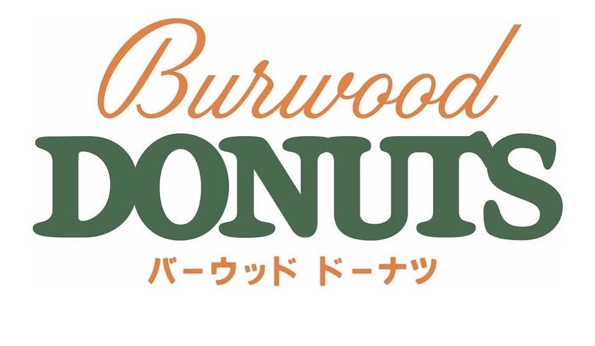
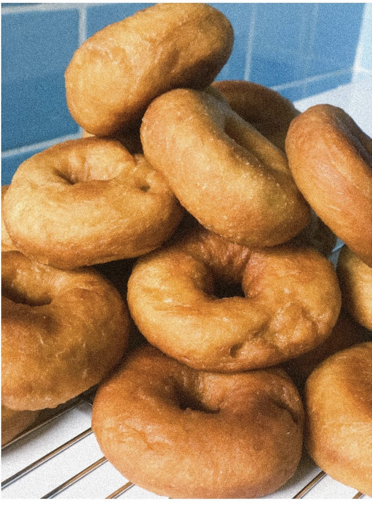
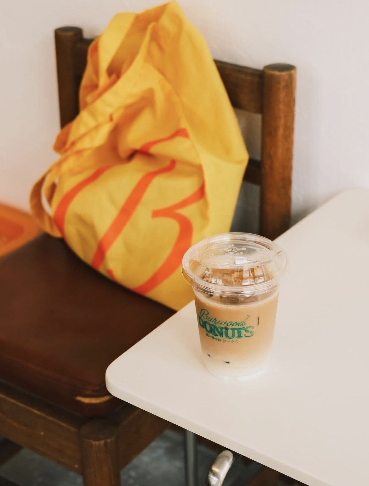
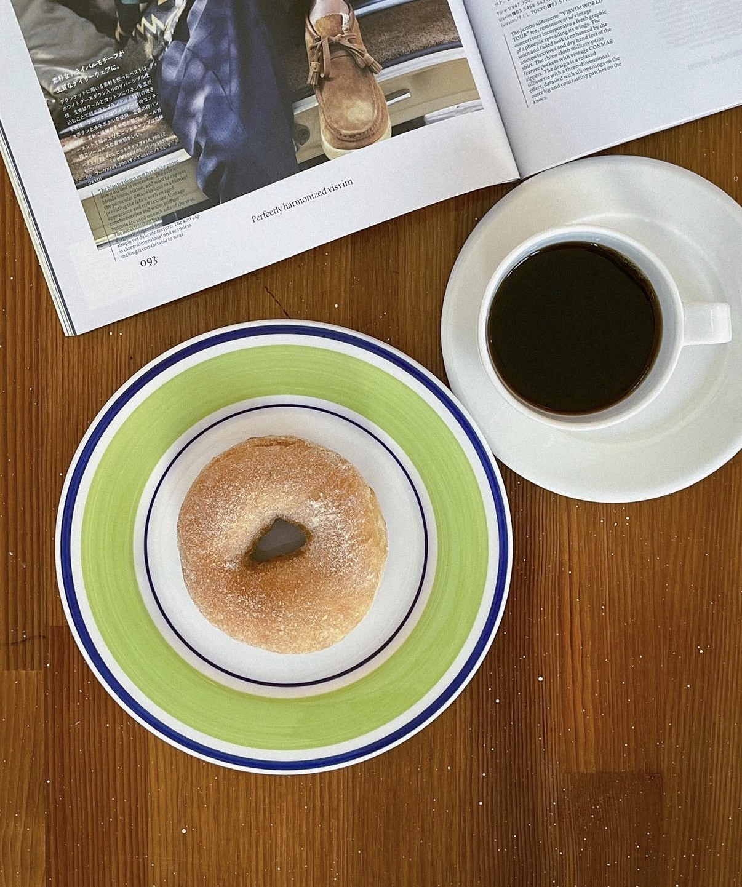
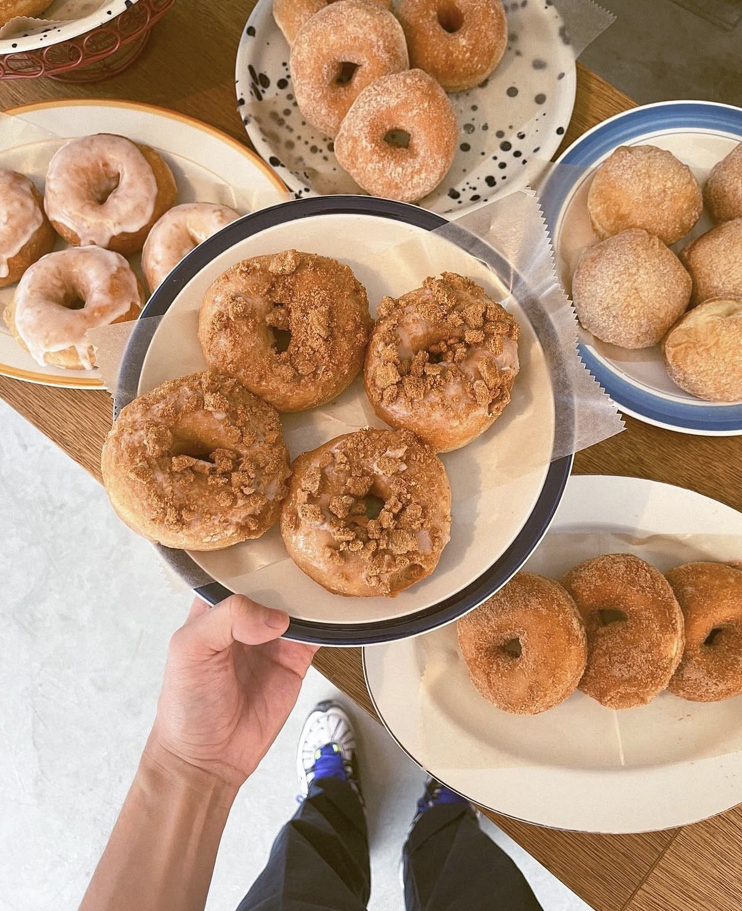
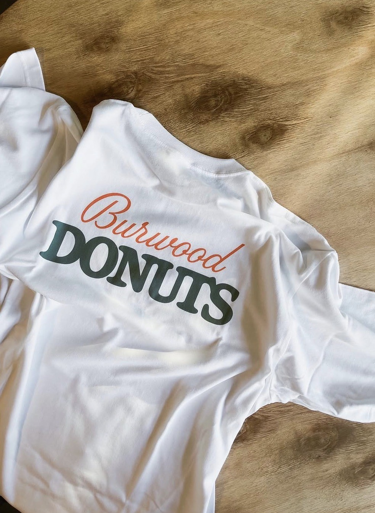
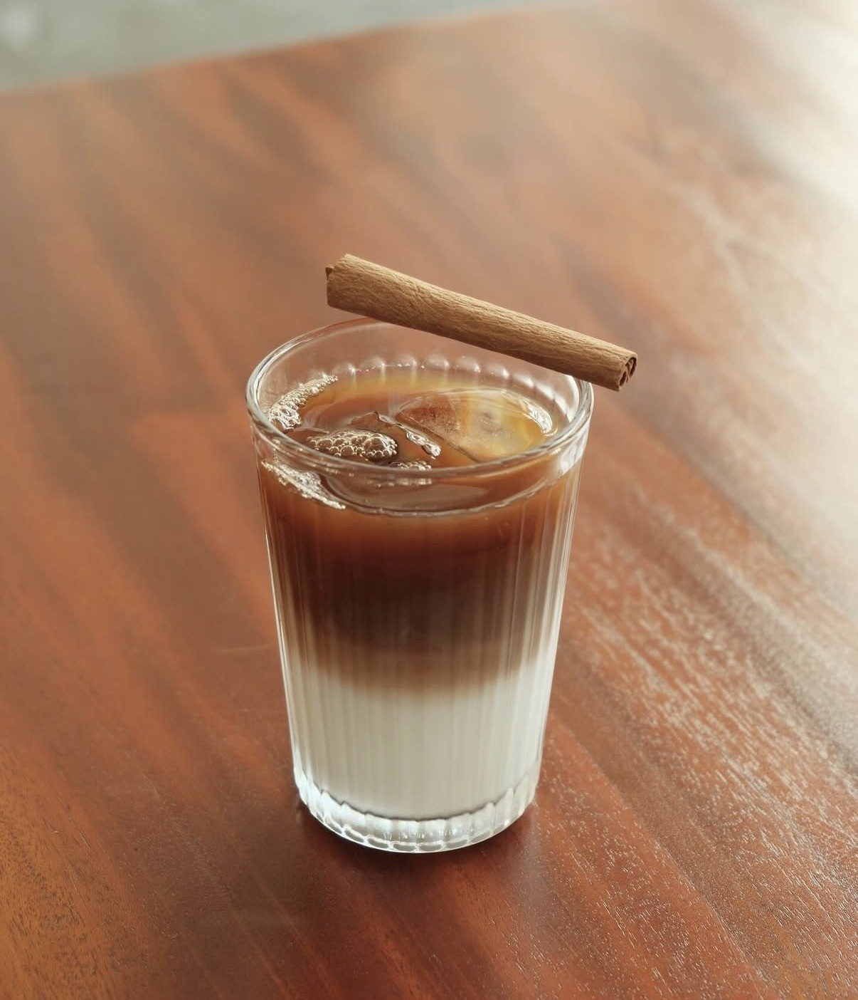

Burwood Donutsバーワードドーナツ
バーウッドドーナツ
Burwood Donuts is one of those places in Miyakojima that quietly becomes part of your routine. Opened in October 2023, the shop was started by an owner from Chiba who chose the island as a new beginning. With a personal connection to Miyakojima through family, the move wasn’t just a change of location — it was a shift toward something more intentional and grounded. That feeling carries into the space and the food. The donuts are handmade, light, and not overly sweet — the kind you can enjoy slowly, paired with coffee, without it feeling too heavy. In Miyakojima, where life moves a little differently, Burwood fits naturally. Not loud, not overly curated — just honest, everyday comfort. Whether it’s a quiet morning, an afternoon break, or something to take home, it’s the kind of place that stays with you.
バーウッドドーナツは、気づいたら日常に溶け込んでいるようなお店です。 2023年10月にオープンし、オーナーは千葉県から宮古島へ移住。 コロナをきっかけに新しい挑戦としてこの島を選び、 ご家族とのご縁もあり、この場所でお店を始めました。 その想いは、お店の空気感やドーナツにも自然と表れています。 手作りのドーナツは軽くて優しい甘さで、 コーヒーと一緒にゆっくり楽しめる仕上がりです。 宮古島のゆったりした時間の中で、 無理に飾らず、自然体でいられる場所。 さりげなく、でも心地いい時間をくれるお店です。
Why My Miyakojima Recommends ItMy Miyakojimaがおすすめする理由
Selected for its handmade warmth, neighborhood feeling, and the small everyday joy it brings to island life.
手づくりの温かさ、地域に馴染む雰囲気、そして日常に小さな楽しみを届けてくれるところを大切に紹介しています。
Photos 写真






Location 場所
Address
816-2 Hirara Shimozato,
Miyakojima, Okinawa
沖縄県宮古島市平良下里816-2
Phone
080-4001-0740
電話番号：080-4001-0740
📞 Call Now 電話する 📍 Googleマップで見る Open in Google Maps 🌐 Website 公式サイト 📸 Instagram @burwood_donuts宮古島の事業者さまへFor Miyakojima Businesses
お店やサービスを、英語と日本語で丁寧に紹介しませんか？
My Miyakojimaでは、宮古島の事業者さま向けに、雰囲気やストーリーまで伝わる紹介ページを制作しています。観光で訪れる方にも、島に住む方にも届くように、英語と日本語の両方で掲載できます。
My Miyakojima creates curated bilingual feature pages for selected local businesses, helping visitors understand your story before they contact you.
掲載・制作の相談をするContact My Miyakojima